10 部片单 · 恐怖 / 科幻 / 惊悚 / 悬疑 / 剧情
| # | 片名 | 类型 | 评分 / 状态 |
|---|---|---|---|
| 01 | 广岛之恋 | 剧情 / 爱情（法国左岸派 · 记忆与创伤） | 7.9 / 7.8 / 主竞赛 |
| 02 | 甜蜜的生活 | 剧情 / 喜剧（意大利现代主义 · 费里尼） | 8.6 / 95% / 8.0 |
| 03 | 精疲力尽 | 剧情 / 犯罪（法国新浪潮 · 戈达尔） | 8.4 / 97% / 7.6 |
| 04 | 无罪的人 | 恐怖 / 悬疑（英国哥特 · 心理惊悚） | 7.9 / 95% / 88 |
| 05 | 切腹 | 剧情 / 悬疑（日本 · 反武士道） | 9.4 / 8.6 / 评审团特别奖 |
| 06 | 鬼婆 | 恐怖 / 剧情（日本 · 新藤兼人 · 中世纪三部曲） | 8.1 / 83% / 7.8 |
| 07 | 砂之女 | 剧情 / 惊悚（日本 · 敕使河原宏 · 存在主义） | 8.5 / 100% / 8.4 |
| 08 | 人猿星球 | 科幻 / 悬疑（新好莱坞 · 反乌托邦） | 8.1 / 90% / 79 |
| 09 | 雌雄大盗 | 剧情 / 犯罪（新好莱坞 · 阿瑟·佩恩） | 8.2 / 91% / 7.8 |
| 10 | 西部往事 | 剧情 / 西部（意大利式西部片 · 莱昂内） | 8.7 / 96% / 82 |
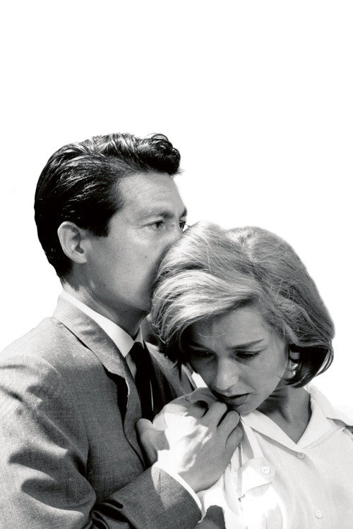
广岛之恋 Hiroshima mon amour
「你在广岛什么都没看见。」
剧情梗概
1957 年，一个法国女演员来广岛拍一部反战电影，最后一天遇上一个日本建筑师。两人在旅馆房间里度过不到一天一夜，而她不停地在讲另一件事：十四年前，在法国小城内韦尔，她爱上过一个德国占领军士兵；德军撤退时他被击毙在她怀里，而她因为「通敌」被剃光头、关进地窖。广岛与内韦尔，两段记忆在她的叙述里互相侵入。
亮点
- 剧本出自玛格丽特·杜拉斯之手。她写的不是对白，是台词式的长句——两个人互相打断、互相纠正，像在争一件谁也没真正经历过的事。
- 开场那十几分钟是影史上最著名的一段蒙太奇：被烧焦的头发、变形的钢筋、博物馆的展品，与两具缠在一起的躯体交替剪辑。雷乃把「集体创伤」和「肉身」剪成了同一件事。
- 「你在广岛什么都没看见」「我全都看见了」——这场争论是全片的轴心：记忆到底属于亲历者，还是属于讲述者。
- 它是法国「左岸派」的起点，也常被算作新浪潮的开山作之一，但它和戈达尔那批人完全不同：雷乃关心的是时间，不是街头。
- 影片在 1959 年戛纳主竞赛单元放映（因政治原因未参与金棕榈角逐），拿到国际影评人费比西奖。
- 片名里的「mon amour」（我的爱人）是杜拉斯加的。雷乃原本只想拍一部关于广岛的纪录片，被杜拉斯劝成了剧情片。
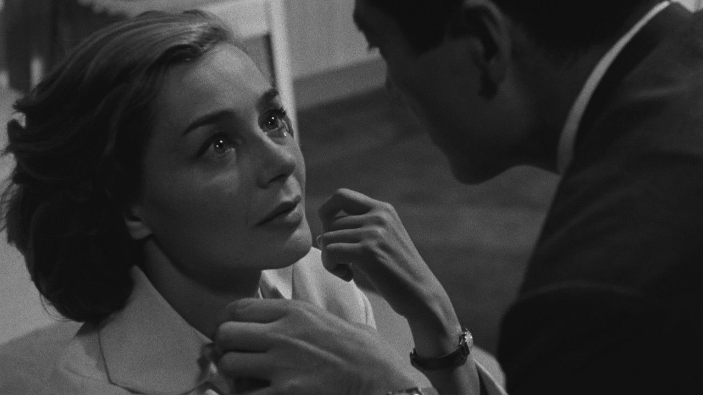
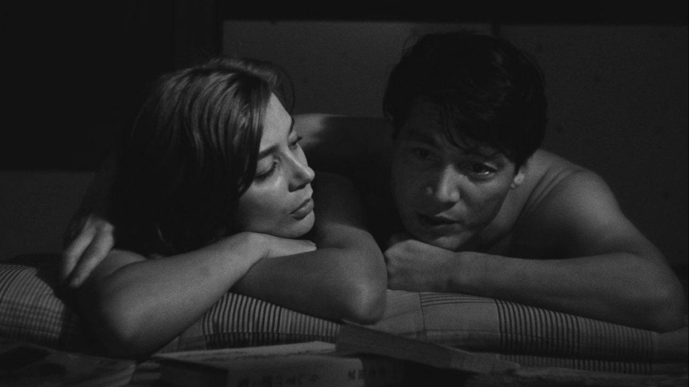
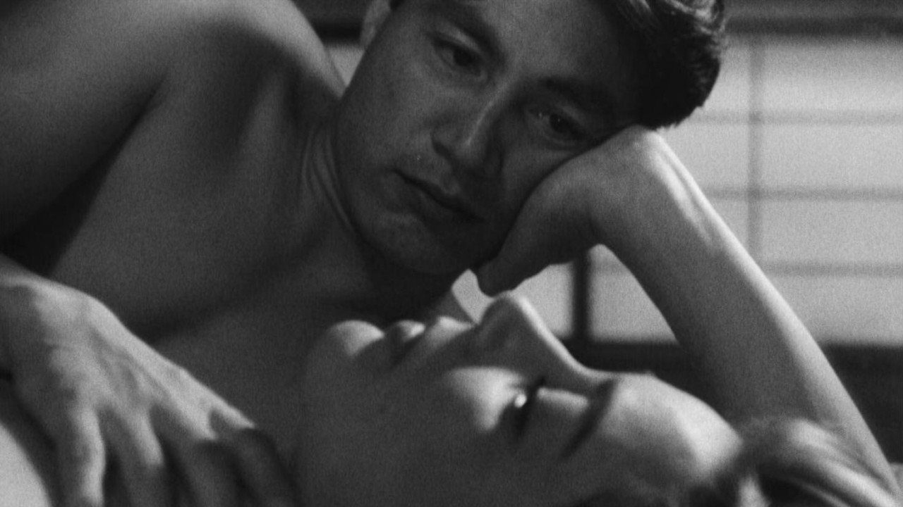
导演与主创 · 他们的历史作品
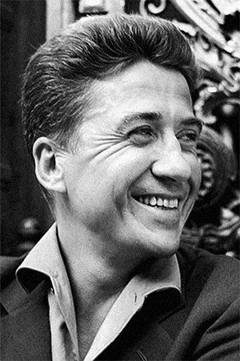
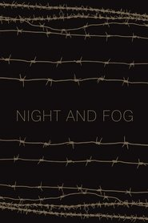
夜与雾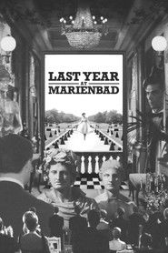
去年在马里昂巴德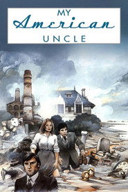
我的美国舅舅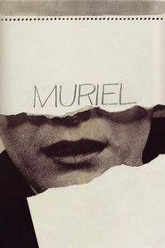
莫里埃尔 蓝白红三部曲之蓝
蓝白红三部曲之蓝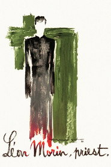
莱昂莫汉神父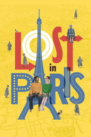
流浪巴黎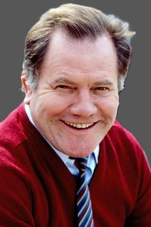
 怪房客
怪房客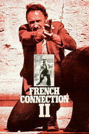
法国贩毒网2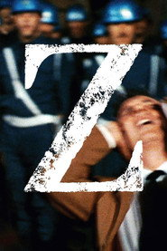
焦点新闻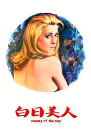
白日美人短评（轻微剧透）
《广岛之恋》最特别的地方是：它讲的是一个女人试图把一段记忆说出来，而说出来这件事本身就失败了。轻微剧透：她反复说「我忘记了」，可每一段内韦尔的闪回都比上一次更清晰——雷乃用闪回的「清晰度」来表现记忆的强度，这在 1959 年是全新的语法。更狠的是结尾：两个人在咖啡馆里互相唤对方的名字，一个叫「广岛」，一个叫「内韦尔」。他们从头到尾没问过对方真名。也就是说，这场爱情的对象其实是两座城、两段历史，而不是彼此。所以它看着像爱情片，其实是一部关于「人无法真正向另一个人交付自己过去」的电影。埃玛妞·丽娃的表演是那种你不觉得她在演的状态——她大部分时间只是在说话，语速均匀、几乎不动，但你能听见她在句尾漏掉的那些东西。
为什么值得一看
喜欢《去年在马里昂巴德》《花样年华》《记忆》（2021 阿彼察邦）这类「时间不线性」电影的人；想看新浪潮另一条支脉（左岸派，而不是戈达尔那条）的人。黑白，无血腥，含成人情感内容与战争创伤议题。内地未引进，流媒体与修复版碟片可看。
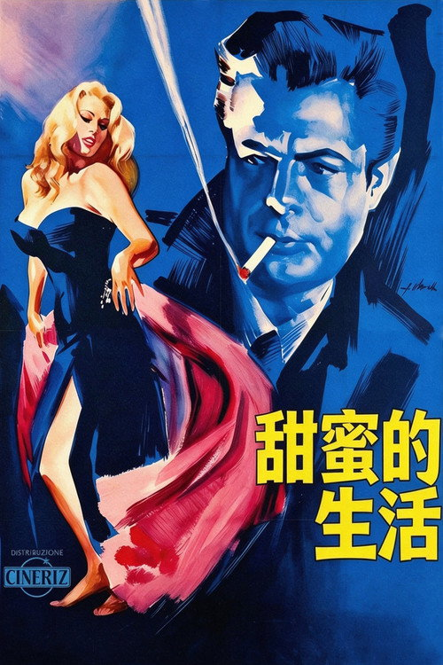
甜蜜的生活 La Dolce Vita
「你已经把一切都浪费了。」
剧情梗概
马切洛是罗马的小报记者，靠写明星八卦过活。他想当作家，但一直没写成。影片没有连贯剧情，只有他漂过的七个夜晚：追瑞典女星西尔维娅、陪贵族玛达莱娜在街头兜风、陪父亲去夜总会、见证一场假圣母显灵的闹剧。最后一场，一伙人在海边的别墅里狂欢到天亮，然后海滩上出现一条被冲上岸的怪鱼。
亮点
- 《甜蜜的生活》是「paparazzo」（狗仔）这个词的产地——片中那个骑摩托追拍的记者叫 Paparazzo，从此全世界都这么叫。
- 特莱维喷泉那场戏（西尔维娅走进水里、马切洛跟进去）是影史被引用最多的镜头之一。拍的时候是冬天，阿妮塔·艾克伯格穿了三层潜水衣在冷水里站了整晚；马斯楚安尼则灌了整瓶伏特加才下去。
- 费里尼原本想拍「一个记者的七天」，最后拍成了七夜——白天的段落几乎全被删掉。这也是为什么全片从头到尾没有一场清醒的对话。
- 它拿到 1960 年戛纳金棕榈，但当年的争议极大：梵蒂冈的官方报纸公开谴责它「伤风败俗」，意大利议会也有人要求禁映。
- 片中那个「假圣母显灵」的段落，是费里尼对大众迷信最刻薄的一次嘲讽——人群举着蜡烛走了整整一夜，什么也没等到。
- 174 分钟，七段式结构。它发明了一种至今没人完全学会的节奏：每一段都有完整起落，但整体是往下走的。
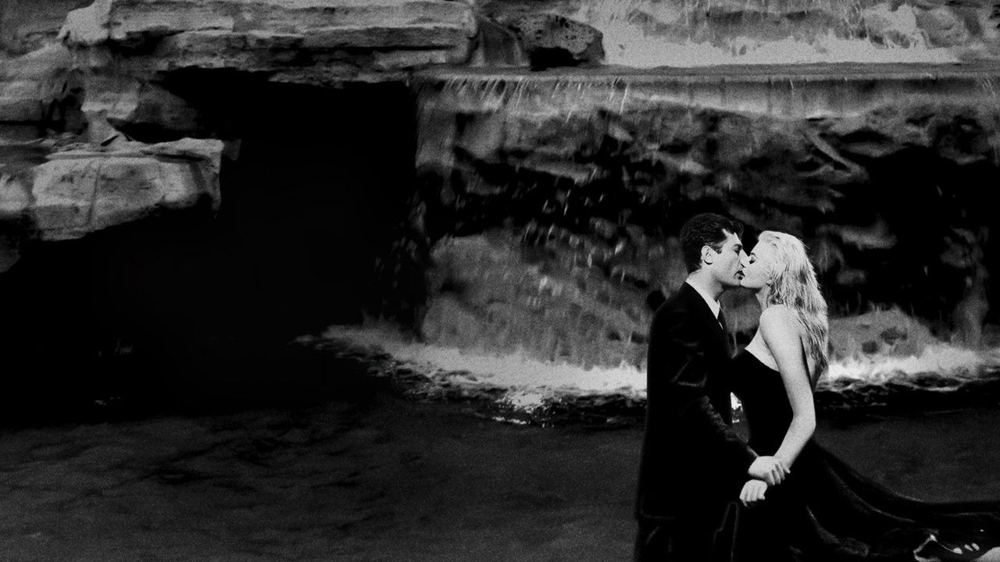
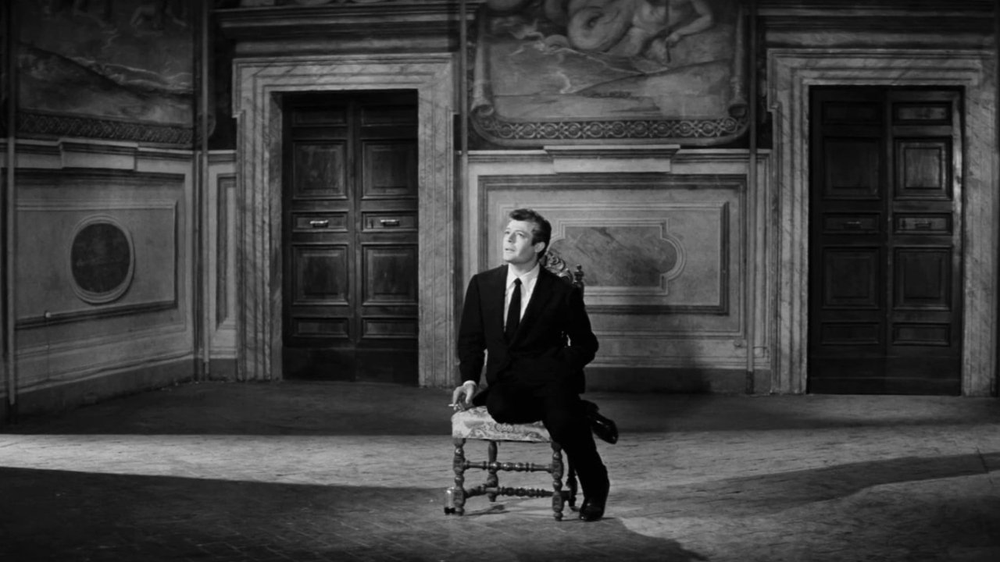
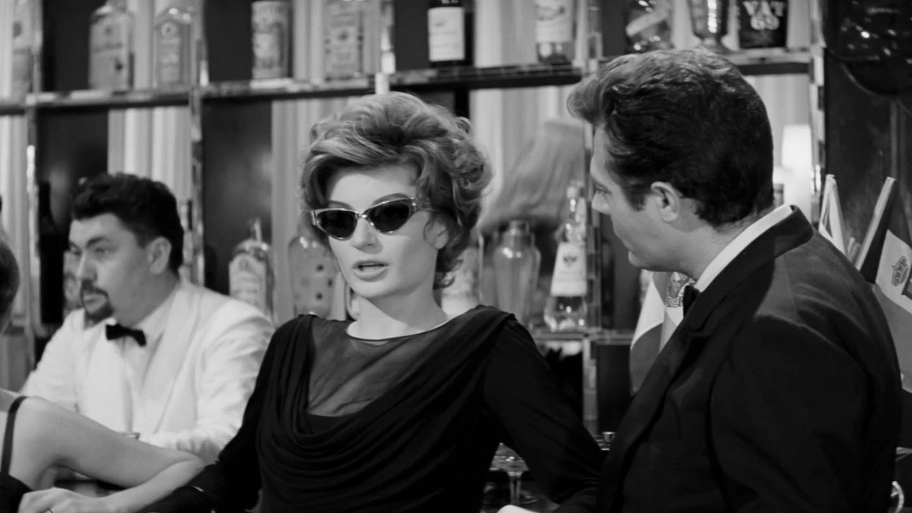
导演与主创 · 他们的历史作品
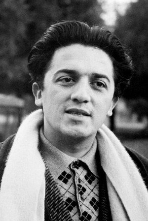
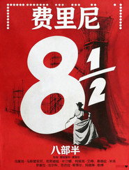
八部半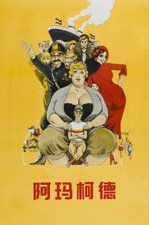
阿玛柯德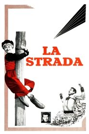
大路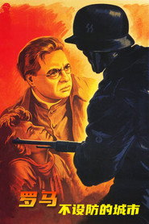
罗马，不设防的城市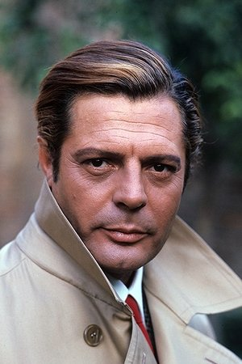
 夜
夜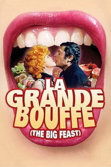
极乐大餐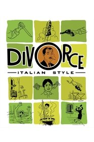
意大利式离婚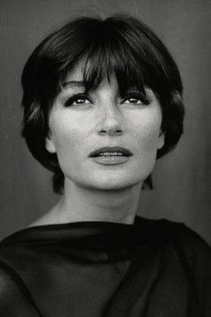
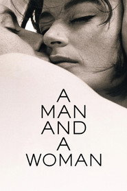
一个男人和一个女人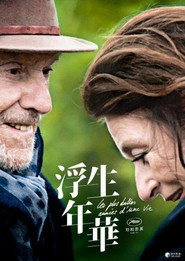
最美年华短评（轻微剧透）
看《甜蜜的生活》最要紧的一件事是：不要等剧情。它没有剧情，它只有一个人不断往下掉的过程。轻微剧透：影片真正的转折不在哪一场戏，而在马切洛这个人的变化——前两段他是观察者，还带着点嘲讽；到中段他开始羡慕那些被他观察的人；到最后的海滩别墅，他已经成了其中一员，甚至是最空虚的那个。费里尼做的事其实很残忍：他把三十岁男人的所有出口一个一个堵上——写作堵在段首（他从未动笔）、爱情堵在艾玛的自杀未遂、宗教堵在假圣母、家庭堵在父亲那一夜之后的心脏病。最后是那条鱼：巨大的、翻着白眼的、被冲上岸的东西。马切洛看着它，对面沙滩上有个少女在朝他喊什么，他听不清，摆了摆手，转身走回人群。所以这片名是反话。La Dolce Vita 是《甜蜜的生活》，可全片没有一秒是甜的。
为什么值得一看
喜欢《八部半》《罗马》《绝美之城》这类「城市肖像」电影的人；能接受三个小时、无主线、靠段落推进的观众。黑白，含成人内容与自杀议题。内地未引进，流媒体与修复版碟片可看。
精疲力尽 Breathless (À bout de souffle)
「你真恶心。」——「那又怎样？」
剧情梗概
米歇尔从马赛偷了一辆车开往巴黎，路上被摩托警追，他开枪打死了一个警察。到巴黎后他躲在美國女友帕特丽夏的公寓里，一边想办法讨回一笔卖车的钱，一边纠缠她。帕特丽夏在报社遇到警长，对方要她一有消息就打电话。她一边迷恋他那副什么都不在乎的样子，一边嫌他太不靠谱。最后她报了警。
亮点
- 戈达尔拍这部片时没有完整剧本，只有特吕弗写的一个故事大纲，台词大多是现场给的。贝尔蒙多和茜宝每天到片场才知道今天说什么。
- 跳接（jump cut）是它最著名的技术标签：同一场戏里直接剪掉中间几秒，让时间断裂。这在当时被视为「不会剪」，后来成了电影语言的一部分。
- 全片用自然光、手持摄影、真实街道拍摄，摄影机常常直接架在推车里被人推着走——因为预算不够租设备。
- 成本约 40 万法郎，是当时一部法国普通剧情片的四分之一。它和特吕弗的《四百击》一起被当成新浪潮的开山作。
- 戈达尔本人客串了一个告密的路人；让-皮埃尔·梅尔维尔演了小说家帕尔武列斯库——那个在机场说「我想成为不朽，然后死去」的作家。
- 结尾米歇尔中枪后在街上跑的那一长段，是影史最长的死亡之一：他跑了整整一条街，倒了，翻过身，说了最后一句，然后才闭上眼睛。
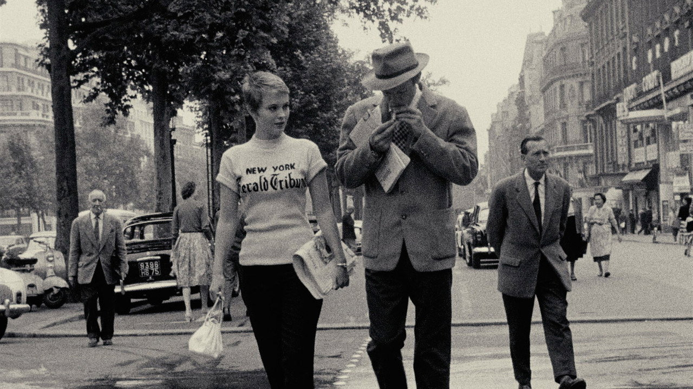
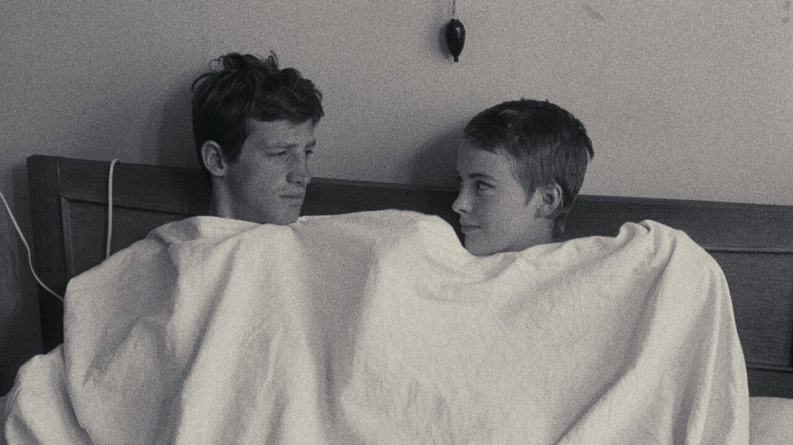
导演与主创 · 他们的历史作品
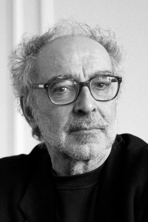
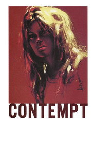
蔑视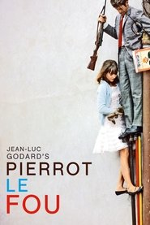
狂人皮埃罗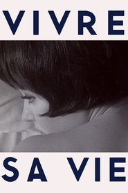
随心所欲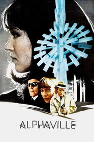
阿尔法城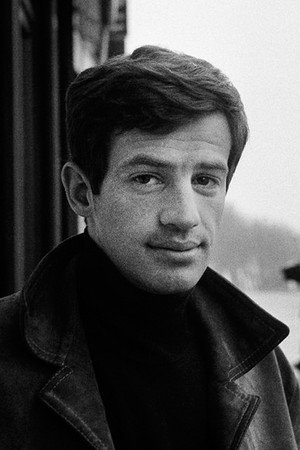
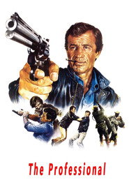
危情谍影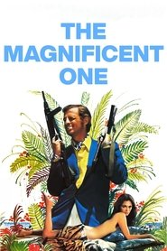
疯狂特务女杀手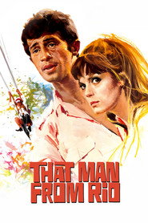
里奥追踪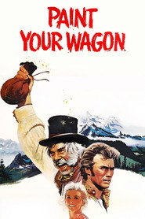
漆好你的马车 国际机场
国际机场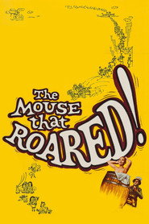
鼠吼奇谈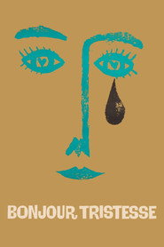
你好，忧愁短评（轻微剧透）
《精疲力尽》最好看的地方不是它的技术，是它的态度——它对「电影该是什么样」这件事完全不在乎。轻微剧透：米歇尔知道自己要死。帕特丽夏告密之后，他其实有机会走，他没走；他在院子里坐着，问她「你怎么能这么干」，然后说「我真想看看你告密时的表情」。这部片真正讲的东西是这个：一个把死亡当风格的人，和一个还没想好要不要认真活着的人，他们之间根本没法沟通。所以那句「你真恶心」「那又怎样」不是调情，是两个人语言系统的错位。戈达尔的跳接为什么重要？因为它让观众意识到「这是被剪出来的」，也就是把电影的接缝露给你看——他不要你沉浸，他要你清醒。这也是为什么它今天看着仍然年轻：它不是在讲故事，它是在讲一个人怎么度过他最后的两天，而且拒绝给这两天任何意义。
为什么值得一看
喜欢《四百击》《朱尔与吉姆》《戏梦巴黎》这类法国新浪潮的人；想理解「跳接」「手持」「实景」这套语法是从哪来的人。黑白，含枪击与暴力画面。内地未引进，流媒体可看。
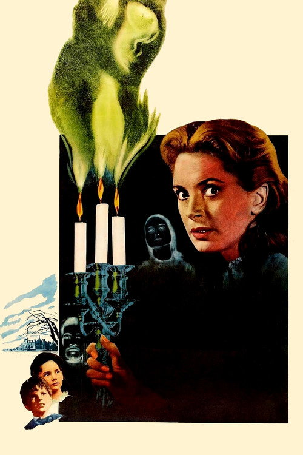
无罪的人 The Innocents
「你会来救我们的，对吧，吉登斯小姐？」
剧情梗概
吉登斯小姐受雇到乡下的布莱庄园，照顾两个孤儿：弗洛拉和迈尔斯。雇主是孩子们的叔叔，他明确说「别来找我，什么都别问我」。庄园很大、很安静。不久她开始看见两个人——一个男人站在塔楼上，一个女人在湖边。管家格罗斯太太告诉她：那是已经死去的前家庭教师杰塞尔小姐和总管彼得·昆特。而两个孩子，似乎一直知道他们在。
亮点
- 改编自亨利·詹姆斯 1898 年的中篇《螺丝在拧紧》。原著最厉害的地方是那个「不可判定」：鬼到底存在，还是女教师疯了——詹姆斯从头到尾没有给答案。
- 编剧名单里有杜鲁门·卡波特。他和威廉·阿奇博尔德、约翰·莫蒂默一起把小说改成了剧本，片中大量对白直接来自原著。
- 摄影师弗雷迪·弗朗西斯用深焦镜头把前景和背景同时压在画面里——你永远不确定下一个镜头会从哪儿冒出一个人来。
- 全片没有一个特效镜头，没有一个血腥画面。它靠声音：鸟叫、风声、钢琴、孩子唱歌。
- 黛博拉·蔻儿此前几乎只演体面的英国淑女，这部片是她职业生涯里最不体面的一次——她演的是一个逐渐失控的人。
- 两个孩子（马丁·史蒂芬斯与帕梅拉·富兰克林）的表演是它最冷的地方：他们说出台词的方式太乖了，乖到不正常。
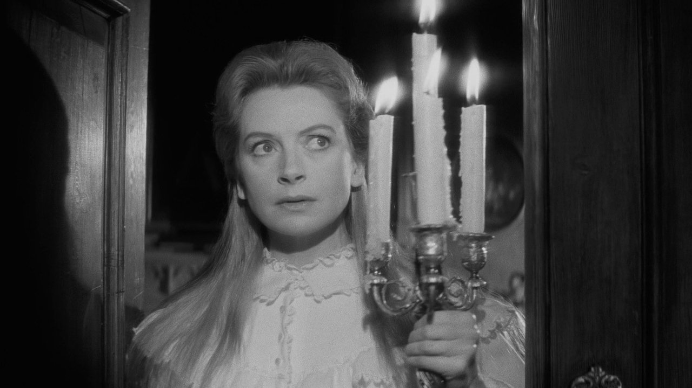
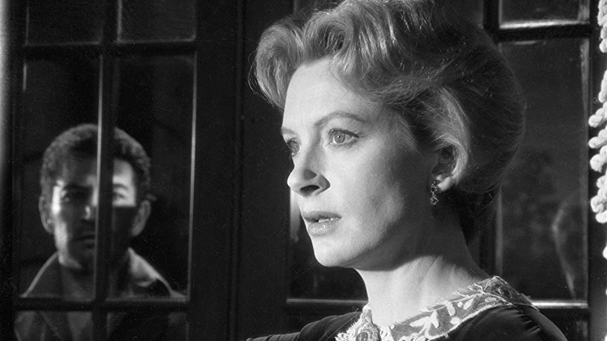
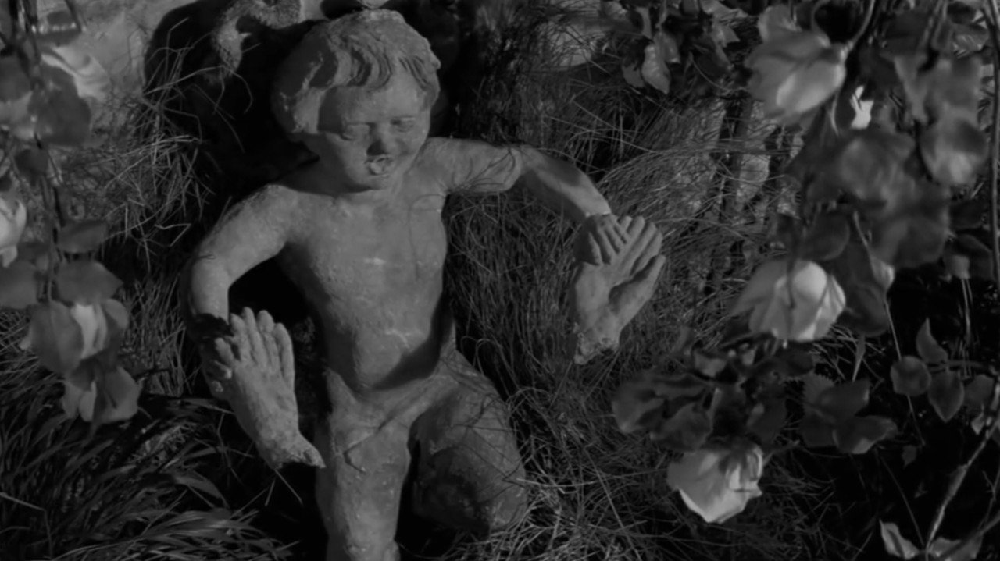
导演与主创 · 他们的历史作品
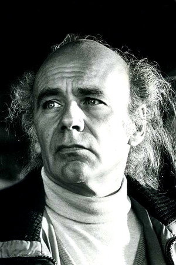
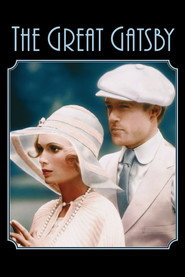
了不起的盖茨比 黑水仙
黑水仙 乱世忠魂
乱世忠魂短评（轻微剧透）
《无辜的人》是那种看完之后你会怀疑自己的电影——因为你不确定刚才看到的是不是真的发生了。轻微剧透：全片最关键的一句台词是迈尔斯说的「你会来救我们的，对吧」。这句话可以有两种读法：孩子在向女教师求救，或者鬼在借孩子的嘴说话。克莱顿从头到尾没有选。更冷的是结尾：迈尔斯在吉登斯小姐怀里死了。她把他抱得太紧，或者说她抱住的是她自己想象里的罪恶——影片没解释。所以它和《闪灵》是两种东西：《闪灵》告诉你房子有问题，《无辜的人》告诉你可能是女教师有问题，而且就算真是她有问题，那两个孩子也确实不对劲。这也是它在烂番茄 95%、Metacritic 88 却只有豆瓣 7.9 的原因：它不给答案，而很多人看恐怖片是为了得到一个答案。
为什么值得一看
喜欢《闪灵》《小岛惊魂》《遗孀秘闻》这类「不确定是不是鬼」的观众；想看没有特效、全靠暗示撑起来的恐怖片的人。黑白，无血腥，含儿童死亡与心理压迫，情绪偏沉。内地未引进，流媒体可看。
切腹 Harakiri (Seppuku)
「我今天的命运，或许就是你们明天的遭遇。」
剧情梗概
宽永七年，落魄浪人津云半四郎来到江户名门井伊家，请求借庭院切腹。家老斋藤勘解由接待了他，并说起半年前的事：另一个浪人千千岩求女也来过，家臣们看穿他是来讹钱的，逼他用一把竹刀切腹，他痛到咬舌而死。半四郎听完，仍坚持要切腹，只是请求指定三名介错人——而那三个人，恰好都「病了」。
亮点
- 编剧是桥本忍（《罗生门》《七武士》）。他在这里做了一件比《罗生门》更狠的事：不是让不同人讲同一个故事，而是让同一个人把故事的下半段讲完。
- 仲代达矢的表演是这部片的骨架。他坐在那里讲的时候几乎不动，所有的力气都在声音里——越到后面语速越慢，也越冷。
- 全片采用对称构图：井伊家的庭院、家臣的座次、甲胄的摆放。小林正树用「秩序」的画面去拍一个「秩序吃人」的故事。
- 1963 年戛纳评审团特别奖；日本《电影旬报》年度十佳第二。木下惠介称它是日本最好的五部电影之一。
- 它常被称为「一部反武士片的武士片」——唐纳德·里奇就是这么说的。片中那句「武士道不过是门面」，是当年日本影坛最直接的冒犯。
- 结尾那场混战是全片唯一的动作戏，也是唯一的乱局：所有对称构图在这里全部崩掉。半四郎不是被打败的，是被人数压死的。
导演与主创 · 他们的历史作品
 乱
乱 用心棒
用心棒 影武者
影武者 天国与地狱
天国与地狱短评（轻微剧透）
《切腹》是那种看完会坐一会儿的电影。轻微剧透：半四郎根本不想切腹。他来井伊家是为了把女婿求女的死摊开——求女不是来讹钱的，他是为了给妻儿治病；他被逼着用竹刀剖腹，是因为家臣们要确保「规矩」不受挑战。半四郎最狠的一招，是他先让家老把这件事当成一个故事讲完，再当着所有人的面把后半段接上。也就是说，他要让井伊家亲口承认自己做过什么。最后他砍倒几个人、砸碎甲胄，然后切腹——而井伊家的记录册上，这一页会被写成「浪人两名，切腹，家中无事」。这部片真正要说的是：一个制度只要愿意维护自己的面子，它就可以把任何人的死解释成合理的。它的豆瓣 9.4 不是因为打戏好看，是因为它把这件事说得太清楚了。
为什么值得一看
喜欢《七武士》《影武者》《用心棒》这类日本时代剧的人；想看「武士道」被拆开来审查的观众。黑白，含切腹与暴力画面，情绪极沉。内地未引进，流媒体与修复版碟片可看。
鬼婆 Onibaba
「人活着，就得活下去。」
剧情梗概
日本南北朝，战乱。一片齐腰高的芦苇荡里住着婆媳二人，靠杀死掉队的士兵、剥下铠甲换粮食活着。同村的士兵八带回了儿子战死的消息，随后留下，和儿媳每晚在芦苇里私会。婆婆怕儿媳离开自己就没法活，于是在路上杀死一个戴鬼面具的武士，抢下面具，夜里扮鬼去吓唬她。她没想到的是：那张面具，摘不下来了。
亮点
- 新藤兼人自编自导，灵感来自他母亲讲过的一则佛教寓言：一个被诅咒的女族长。
- 乙羽信子是新藤兼人的妻子，也是他的固定女主角。她在这里演婆婆——一个几乎全靠身体语言完成的角色，跑、蹲、趴、喘，几乎没有台词。
- 芦苇荡是这部片真正的主角。摄影几乎不给天空，画面永远被竖着的芦苇切碎，人只能从缝隙里被看见。
- 面具摘不下来那场戏的妆效，是直接参照广岛原爆伤者的照片做的。这是全片和「鬼」最无关、却最恐怖的一层。
- 拿到 1965 年日本蓝丝带奖最佳摄影、最佳女配角。
- 2026 年 1 月，标准收藏（Criterion）发行了本片的全新修复版蓝光——一部 1964 年的黑白片，六十年后仍在被重做。
导演与主创 · 他们的历史作品
短评（轻微剧透）
《鬼婆》名义上是恐怖片，实际上是一部关于「人被逼到什么份上还算人」的电影。轻微剧透：全片没有一个鬼。婆婆戴上那张面具只是为了留住儿媳——不是为了性，是为了劳动力：她老了，一个人杀不动士兵，会饿死。所以这部片最可怕的地方不是面具，是它的动机完全说得通。结尾那场戏是全片的重量：面具和脸长在了一起，武士说「你的脸真美」——而所谓的「美」，是一张已经不属于人的脸。新藤兼人在这里做的事比大多数恐怖片都要狠：他先让你理解婆婆，再让你看着她变成鬼。你没法站在道德高地上骂她，因为她的每一步都是活下去的必要代价。这也是为什么它和《切腹》是同一个十年的两面：一个讲制度吃人，一个讲饥饿吃人。
为什么值得一看
喜欢《怪谈》《黑猫》《裸之岛》这类日本黑白作者电影的人；想看「没有鬼的鬼片」的观众。黑白，含暴力、尸体与性暗示段落，有惊吓镜头。内地未引进，修复版碟片可看。
砂之女 Woman in the Dunes (砂の女)
「我为什么要逃呢？逃出去又能怎样。」
剧情梗概
昆虫爱好者仁木顺平到海边沙丘考察，错过末班车。村民「热情」地安排他到沙坑底部的一户人家借宿——那里住着一个寡妇。第二天早上绳梯被收走了。他在一个巨大的沙坑底，和这个女人一起生活：每天必须铲沙，否则房子会被流沙埋掉；水按配额供给；食物由村里送来，条件是继续铲沙。他试了七次逃跑，七次失败。
亮点
- 原著是安部公房（《箱男》《他人的脸》），被称为「日本的卡夫卡」。他本人参与了剧本。
- 导演敕使河原宏出身于草月流花道世家，本职是造型艺术家。他对「沙子」的处理是颗粒级的——全片有大量沙子流动的微距镜头。
- 配乐是武满彻。他用尺八、琵琶和电子音做了一份至今听着都怪的配乐，和画面完全不调和，这恰恰是效果的一部分。
- 1964 年戛纳评审团特别奖，1965、1966 年两度获奥斯卡提名（最佳外语片、最佳导演）。
- 岸田今日子演寡妇。她在这个角色里几乎没有情绪起伏——她接受了规则，也因此比男主角自由。
- 147 分钟，全片只有一个场景：一个沙坑。它证明了一件事：只要把处境写透，一个空间就够拍三个小时。
导演与主创 · 他们的历史作品
 他人之颜他人之颜他人之颜
他人之颜他人之颜他人之颜短评（轻微剧透）
《砂之女》最颠覆的地方在最后十分钟。轻微剧透：男主角终于逃出去了。沙坑外的绳梯就在那儿，没有看守，他一路跑到海边，天亮了——然后他停下来，转身往回走。这个反转不是因为他爱上了寡妇，是因为他发现：他逃出去之后要面对的东西（身份、工作、被承认、被人看见）和他每天铲的沙没有区别。他之前想逃，是因为他以为外面有「证明自己存在」的办法；而在沙坑里他研究出了一种从沙里取水的方法——那才是他第一次真的做成一件事。所以它不是一个「被困住」的故事，是一个「人为了不被埋掉，必须每天劳动」的寓言，而劳动本身也可以是意义。这也是它和《切腹》正好相反：《切腹》里的主人公以死反抗制度，《砂之女》里的主人公以留下反抗「自由」这个词。烂番茄 100% 不是因为它好看，是因为它无法被反驳。
为什么值得一看
喜欢《潜行者》《飞向太空》《2001 太空漫游》这类慢节奏思辨科幻的人；能接受两个半小时、几乎单一场景的观众。黑白，含性暗示与裸露段落，无血腥。内地未引进，修复版碟片可看。
人猿星球 Planet of the Apes
「把你的脏爪子拿开，你这个该死的脏猴子！」
剧情梗概
宇航员泰勒的飞船坠毁在一个陌生星球。他和同伴发现这里的文明由猿类统治：猿骑马、持枪、讲英语，人类是被猎捕、被阉割、被做实验的哑巴野兽。泰勒被抓进实验室，和女科学家齐拉、她的未婚夫科尼利厄斯周旋，最后带着一个人类女孩诺瓦逃进「禁区」。在禁区的海岸线上，他看见了半埋在沙里的东西。
亮点
- 改编自皮埃尔·布尔 1963 年的小说。布尔后来也写了《桂河大桥》。
- 猿的化妆由约翰·钱伯斯设计，是电影化妆史上的分水岭——此前猿类基本靠戏服，此后才有了「能说话的脸」。
- 结尾自由女神像那一镜是影史最著名的反转之一。它的设计者是编剧罗德·瑟林（《阴阳魔界》），原剧本里是猿在纽约的废墟上追捕人类。
- 查尔登·海斯顿演泰勒。他 1960 年刚凭《宾虚》拿过影帝，是当时最贵的男演员之一——他接这部片时，剧本只有结尾那张图。
- 1968 年上映，正值美国民权运动与反战运动最激烈的年份。它关于种族、阶级与「谁有资格定义文明」的隐喻，当年的观众不需要解释。
- 它催生了四部续作、两部剧集、一次 2001 年翻拍，以及 2011 年重启的《猩球崛起》三部曲——但没有一部续作拿到过首作这样的评价。
导演与主创 · 他们的历史作品
 虫虫危机
虫虫危机短评（轻微剧透）
《人猿星球》今天最容易被当成「结局很牛」的片来看，但它真正厉害的地方是中段。轻微剧透：泰勒在实验室里被剥夺了语言——他被判定为不会说话的野兽。这一段是全片的重心：他越激动、越证明自己有理智，看守他的猿越觉得他只是更凶的畜生。也就是说，这部片先让你体验一遍「不被当成人」是什么感觉，然后才在结尾告诉你：你这个物种就是这么对待别人的。自由女神像那一镜之所以成立，是因为前面九十分钟已经把「文明只是谁掌权的说法」这件事铺完了。还有一个容易忽略的点：齐拉和科尼利厄斯不是反派，他们是真的在做科学，只是他们的科学把人类当作不值得同情的材料。这也是它比后来所有续作都强的地方——它不站在人类这边，也不站在猿那边，它站在「制度」的对面。
为什么值得一看
喜欢《2001 太空漫游》《银翼杀手》《猩球崛起》这类科幻的人；想看那个最著名的反转镜头是从哪来的观众。彩色，含暴力与实验题材画面。内地未引进，流媒体可看。
雌雄大盗 Bonnie and Clyde
「我们抢银行。」
剧情梗概
大萧条时期的德州。女招待邦妮遇上一个刚出狱的小贼克莱德——他正要偷她母亲的车。她被他那副满不在乎的样子迷住了，跟着走。两个人抢商店、抢银行，拉上修车工 C.W.、克莱德的哥哥巴克和巴克的妻子布兰奇，组成「巴罗帮」，一路从德州抢到路易斯安那。他们一开始约定不杀人。然后第一次开枪之后，就停不下来了。
亮点
- 它是新好莱坞的起点之一，也是好莱坞暴力尺度被撕开的那一年——1967 年之前，主角中枪不会溅血；这部片之后，会了。
- 沃伦·比蒂当时 30 岁，是制片人兼主演。他最初找的是特吕弗和戈达尔来导，两人都推了，最后落到阿瑟·佩恩头上。
- 费·唐纳薇凭此片一夜成名。她的造型——贝雷帽、及膝裙、手里的雪茄——直接成了 1967 年的时装流行款。
- 吉恩·哈克曼演哥哥巴克，三年后凭《法国贩毒网》拿影帝。埃斯特尔·帕森斯演布兰奇，拿下当年的奥斯卡最佳女配角。
- 剧本由罗伯特·本顿与大卫·纽曼写，罗伯特·汤恩参与修改。它刻意把真实历史美化了——历史上的邦妮与克莱德杀了至少九个人，片中的他们几乎是被逼的。
- 结尾那场伏击是慢动作拍的，全身被打成筛子。这是影史第一次用慢动作拍主角之死，后来被抄了无数次。
导演与主创 · 他们的历史作品
 唐人街
唐人街短评（轻微剧透）
《雌雄大盗》当年最招骂的一点是：它让杀人犯变得可爱。轻微剧透：全片真正的转折不是哪一次抢劫，是克莱德的性无能——他不是「什么都能干」的英雄，他在邦妮面前多次失败，这才是他们关系里真正的裂缝。邦妮跟着他不是因为爱情，是因为她受够了小镇上的日子；她要的是「被看见」，而报纸上登她的照片就是被看见。所以这部片的核心不是犯罪，是两个人用犯罪来制造自己的存在感。佩恩聪明的地方在于：他没有批判他们，也没有歌颂他们，他只是让你看着他们一步步从「抢着玩」走到「必须开枪」。到最后那场伏击，慢动作不是为了好看，是因为这两个人早就知道自己会死，而且他们宁愿这样死。1967 年的美国年轻人把这部片当成了反体制宣言，其实它不是——它讲的是「人一旦开始靠制造事件来证明自己活着，就停不下来了」。
为什么值得一看
喜欢《末路狂花》《天生杀人狂》《好家伙》这类亡命公路片的人；想知道 1960 年代末好莱坞是怎么被改造的观众。彩色，含大量枪击与暴力画面。内地未引进，流媒体可看。
西部往事 Once Upon a Time in the West
「三个男人曾经出现在她的生命里：一个带她走，一个爱她，一个要杀她。」
剧情梗概
铁路大亨莫顿想修通横贯美国的铁路，唯一缺的是甜水镇那块有水源的地。地主麦贝恩不肯卖，于是杀手弗兰克带人把麦贝恩一家四口全杀了。麦贝恩的新婚妻子吉尔从新奥尔良赶来，落地就成了寡妇，也继承了那块地。同时，一个吹口琴的无名枪手来到镇上，一个被栽赃的通缉犯夏延也在。三个人围着这块地，各自有账要算。
亮点
- 亨利·方达演反派弗兰克。这是他一生唯一一次演冷血杀手——此前他演了三十年正派。莱昂内为了说服他，飞到美国对他说：镜头从一个拔枪的人的腰部往上摇，最后露出脸，那是亨利·方达。
- 口琴手这个角色最初给的是克林特·伊斯特伍德，他拒了；詹姆斯·柯本要价太高；最后落到查尔斯·布朗森头上。
- 埃尼奥·莫里康内的配乐是先于画面写好的，莱昂内按音乐拍戏。每个人物有专属主题——口琴、电吉他、人声。
- 开场那八分钟（三个枪手在车站等火车）被称为影史最好的开场之一：没有对白，只有水滴、苍蝇、风、门轴和一缕口琴声。
- 它是莱昂内「往事三部曲」的第一部。剧本由达里奥·阿基多与贝纳尔多·贝托鲁奇参与构思——两个后来成为恐怖片大师的人。
- 美国版被派拉蒙剪到 140 分钟，票房惨败；欧洲版 165 分钟大卖。2009 年美国国会图书馆把它列入国家影片登记表。
导演与主创 · 他们的历史作品
 黄金三镖客
黄金三镖客 豹
豹短评（轻微剧透）
《西部往事》是一部「告别」电影，虽然它自己假装不是。轻微剧透：口琴手找弗兰克不是为了钱，也不是为了那块地——他哥哥当年被弗兰克吊死，而弗兰克在行刑前把他哥哥的口琴塞进了他嘴里。这是全片最后才说出来的事，也是它所有沉默的解释。莱昂内拍的是西部片的葬礼：铁路来了，马没用了，枪手也没用了；莫顿这个一辈子躺在火车车厢里的瘸子，才是赢家——他甚至没能走到海边就死了。所以这部片里没有一个人是「为了正义」：弗兰克为钱，夏延为名，口琴手为仇，吉尔为活下去。真正往前走的只有一条铁路。这也是为什么它比《荒野大镖客》高一档：镖客三部曲讲的是人，这一部讲的是时代。结尾口琴手骑马离开，不是因为赢了，是因为他知道接下来没有自己的位置。
为什么值得一看
喜欢《荒野大镖客》《黄金三镖客》《被解救的姜戈》这类西部片的人；想看莫里康内配乐与画面怎么咬合的观众。彩色，含枪杀与暴力画面，165 分钟需耐心。内地未引进，流媒体与修复版碟片可看。